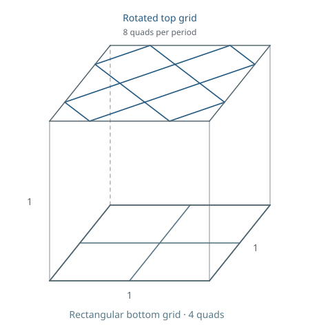

From a rectangular grid to a rotated grid
Hexahedral fillings of a slab periodic in x and y. Four rectangular quads on the bottom connect to eight quads in the rotated top grid. Only the two end grids are physical boundaries: cells may cross the sides of the drawn unit tile.
This collection contains 7 distinct periodic connectivity classes with 38–110 cells per tile. Each viewer shows the selected validated geometry for one class.

Search setup and references
- Problem and scope
- The gallery contains full periodic transitions from four bottom quads to eight rotated top quads per tile. The runnable search targets the upper half of the 52-cell template P52-01: a six-quad Geode interface to an eight-quad top. The gallery is not a complete periodic enumeration.
- Prescribed lower half
- The lower 26-cell Geode is prescribed, not searched. Only its upper interface enters the upper-half search boundary. The default finite cut also fixes 36 side quads in 18 translated pairs; all boundary coordinates stay fixed during HexOpt embedding.
- Starting point
- The upper interior starts empty, with no prescribed upper cells. The default search finds a 26-cell upper filling, giving 52 cells when joined to the lower Geode.
- Symmetry
- The default upper search imposes the diagonal mirror x + y = 1. The lower Geode connectivity has a 180° rotation; a common mirror of the whole 52-cell assembly is not required. The other diagonal mirror, y = x, and both mirrors together are also supported for the upper half.
- Search limits
run-geode-top.shdefaults to a cap of 26 upper cells.SYMMETRY=otherdefaults to 30 andSYMMETRY=twoto 40; these use a different symmetric side cut with 22 quads in 11 translated pairs, preserving the six- and eight-quad caps. All caps count upper cells only. SetTHREADSfor workers and optionallyCAP; there is no default time limit.- Literature
- Mitchell’s 26-cell Geode supplies the lower building block of P52-01. The full periodic transitions and upper fillings shown here are results of this project; no external literature solution is used as a reference for the full transition.
Distinct periodic connectivities
Classes are compared after periodic identification, ignoring coordinates and vertex labels. Each class is shown with one certified embedding; no globally optimal quality is claimed. SJ means scaled Jacobian: larger values indicate better cell shape. Smaller condition numbers indicate less distortion. Both are sampled measurements; see the quality definitions. Sorting applies within each cell-count group. Drag to rotate; scroll to zoom. Switch between one tile and a 2×2 completion. Shrink exposes cell interfaces. Counts and quality values always refer to one periodic tile; cap outlines show the physical boundaries.
Loading the periodic mesh catalog…
Mesh downloads
The periodic JSON preserves quotient vertex indices and lattice offsets. VTU files show unshrunk 2×2 completions. Heights and quality are measured in the stored flat geometry, before any cylindrical or flow-domain mapping.
| Class | Cells / tile | Min. sampled SJ ↑ | Max. condition ↓ | Downloads |
|---|---|---|---|---|
| P38-01 | 38 | 0.090919 | 69.979 | Periodic JSON · 2×2 VTU · Certificate |
| P52-01 | 52 | 0.359992 | 9.125 | Periodic JSON · 2×2 VTU · Certificate |
| P56-01 | 56 | 0.191736 | 23.766 | Periodic JSON · 2×2 VTU · Certificate |
| P56-02 | 56 | 0.190476 | 21.564 | Periodic JSON · 2×2 VTU · Certificate |
| P86-01 | 86 | 0.288419 | 11.917 | Periodic JSON · 2×2 VTU · Certificate |
| P108-01 | 108 | 0.183962 | 8.426 | Periodic JSON · 2×2 VTU · Certificate |
| P110-01 | 110 | 0.285904 | 20.810 | Periodic JSON · 2×2 VTU · Certificate |
Validation
Every displayed mesh passes periodic topology checks and an exact positive-Jacobian certificate throughout every trilinear cell. Quality measurements use 21³ samples per cell and are not certified extrema.
HexOpt keeps the bottom grid fixed and permits the top grid to translate rigidly in x and y, preserving its shape and height. Periodic vertex copies move together.
Searching the upper transition
The 52-cell template consists of a 26-cell Geode below a 26-cell upper transition. The shared interface has six quads; the upper transition connects it to the eight-quad top grid.
The repository launcher THREADS=8 bash run-geode-top.sh searches from a boundary-only input at cap 26 and finds the upper connectivity of the displayed 52-cell template. A diagonal mirror constrains the search; the 26-cell solution has four fixed cells and eleven exchanged pairs, giving 15 cell orbits. HexOpt optimizes each candidate, followed by exact cell validation.
The boundary consists of the six-quad Geode interface, eight-quad top, and a periodic cut with 36 side quads in translated pairs. The displayed coordinates and the search's fixed-boundary embedding can differ. Alternative one- and two-mirror searches preserve the caps and use a different periodic side cut. These finite-boundary searches do not enumerate all periodic transitions.